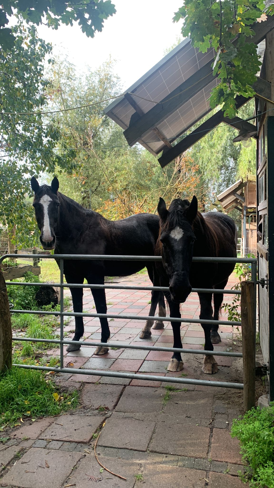

Hallo, ik ben Ineke en ik schrijf een stukje voor deze website.
Omdat ik niet zo'n goede schrijver ben en het ook niet leuk vind om stukjes te schrijven, maak ik er maar iets geks van.
Met een stukje faketekst misschien. Of zal ik Chatgpt een stukje laten schrijven?
Nou ja, ik kijk het even aan, het gaat ook niet om de inhoud van de tekst maar om de vorm. Er komt zo ook nog een leuk plaatje bij.
Ik zou graag iets met paarden willen doen vooral vrijheidsdressuur, natural horsemanship en eventueel met kinderen met een verstandelijke of lichamelijke beperking.
